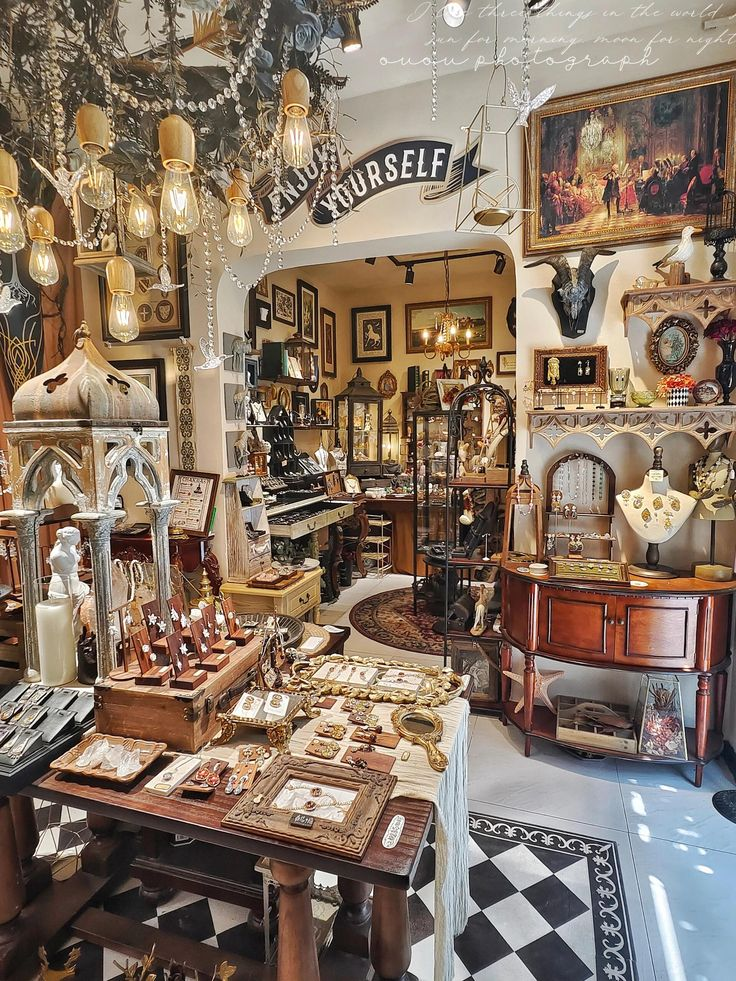
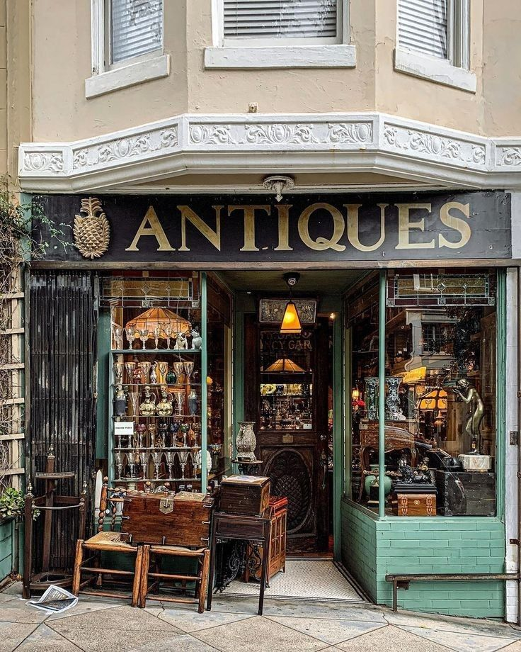
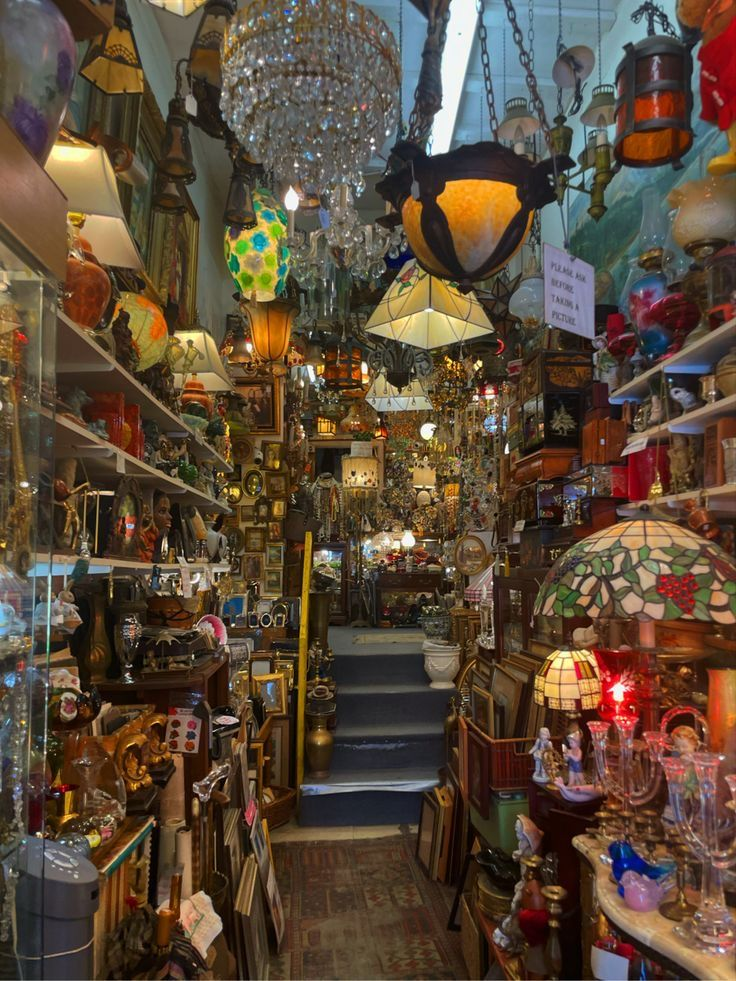

AK – Antiquitäten & Kuriositäten
Unser Antiquitätenhandel steht für Authentizität, Qualität und viel Liebe zum Detail. Wir wählen jedes Objekt mit Sorgfalt aus und legen großen Wert auf Originalität und Zustand.
Entdecken Sie auf unserer Website eine Auswahl unserer aktuellen Angebote und erfahren Sie mehr über unser Geschäft.


